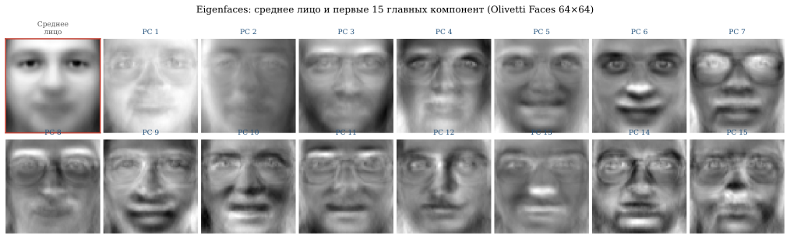
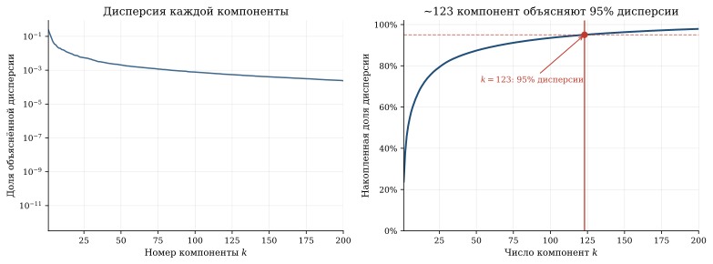
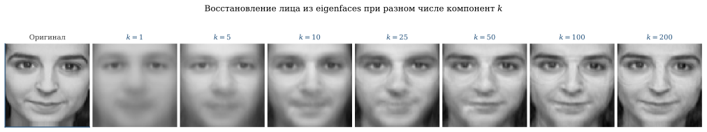

PCA и Eigenfaces
Фотография лица — это вектор из 4096 пикселей. Но лица не занимают всё это пространство: они лежат на тонком многообразии значительно меньшей размерности. Метод главных компонент (PCA) находит это многообразие — и оказывается, что для узнавания лица достаточно 50–100 «собственных лиц» (eigenfaces).
Идея PCA
Дана матрица данных X \in \mathbb{R}^{n \times d} — n объектов, каждый описан d признаками. PCA ищет линейную проекцию в пространство меньшей размерности k \ll d, сохраняющую максимум информации (дисперсии).
Формулировка
Центрируем данные: \bar{X} = X - \frac{1}{n}\mathbf{1}\mathbf{1}^T X.
Ковариационная матрица: C = \frac{1}{n-1} \bar{X}^T \bar{X} \in \mathbb{R}^{d \times d}.
PCA — это собственное разложение:
C = V \Lambda V^T, \quad \Lambda = \text{diag}(\lambda_1, \ldots, \lambda_d), \quad \lambda_1 \geq \lambda_2 \geq \ldots \geq \lambda_d \geq 0.
Столбцы V — главные компоненты — направления максимальной дисперсии. \lambda_i — дисперсия данных вдоль i-й компоненты.
Связь с SVD
Если \bar{X} = U \Sigma V^T (SVD), то:
C = \frac{1}{n-1} V \Sigma^2 V^T \implies \lambda_i = \frac{\sigma_i^2}{n-1}.
PCA — это SVD центрированных данных. На практике SVD вычислительно стабильнее, чем прямое собственное разложение.
Eigenfaces: узнавание лиц
Turk и Pentland1 предложили представлять лица как линейные комбинации «собственных лиц» — главных компонент набора фотографий.
1 Turk, Pentland. Eigenfaces for Recognition, Journal of Cognitive Neuroscience, 1991.
Как это работает
1. Сбор данных. n фотографий лиц размера h \times w, каждая развёрнута в вектор длины d = hw. Формируем матрицу X \in \mathbb{R}^{n \times d}.
2. PCA. Находим k главных компонент v_1, \ldots, v_k. Каждая v_i \in \mathbb{R}^d может быть развёрнута обратно в картинку h \times w — это и есть eigenface.
3. Кодирование. Лицо x проецируется: w = V_k^T (x - \bar{x}) \in \mathbb{R}^k. Вектор w — «координаты» лица в пространстве eigenfaces.
4. Распознавание. Для нового лица вычисляем w и находим ближайшего соседа среди хранимых проекций.
5. Восстановление. Приближённое лицо: \hat{x} = \bar{x} + V_k w = \bar{x} + \sum_{i=1}^k w_i v_i.
Парадокс шага 2: чтобы узнать лицо, нужно сначала вычесть среднее лицо. Eigenfaces — это не портреты, а разности лиц; без центрирования метод не работает. Именно поэтому среднее лицо (первая картинка ниже) выглядит как размытый призрак — это не баг, а точка отсчёта.

Scree plot: сколько компонент достаточно?

Восстановление с разным числом компонент

Покрутите сами на настоящих лицах из датасета Olivetti: двигайте число компонент k — лицо пересобирается из собственных лиц в реальном времени. Уже при k=10–15 лицо узнаваемо, хотя вместо 4096 пикселей хранится лишь k чисел.
Лица структурно похожи: два глаза, нос, рот в фиксированных пропорциях. Поэтому пространство лиц — тонкое многообразие в пикселном пространстве. PCA находит его линейное приближение. Первые eigenfaces ловят освещение и общую форму, средние — детали лица (глаза, брови), последние — шум.
Лицо — это вектор из 4096 пикселей, но реальное разнообразие лиц укладывается примерно в 123 числа: именно столько компонент PCA описывают 95% дисперсии датасета Olivetti. Данные с внутренней структурой занимают ничтожную долю доступного пространства — PCA находит это многообразие. Турк и Пентланд в 1991 году показали: для распознавания лица достаточно тех же ~50–100 чисел — и метод лёг в основу практических систем той эпохи.
Обобщение
Тот же трюк работает для любых однотипных изображений — котиков, рентгенов, спутниковых снимков. Единственное условие: объекты должны быть структурно похожи, чтобы PCA могло найти общую «ось вариации». Для лиц это освещение, поза, выражение. PCA не знает, что именно кодирует — оно просто находит направления, вдоль которых данные наиболее разнообразны.
PCA в других задачах
Финансы: факторная модель
Матрица доходностей n акций за T дней: X \in \mathbb{R}^{T \times n}. PCA выделяет факторы: первая компонента ≈ рыночный индекс, вторая ≈ разница growth/value, третья ≈ размер компании.
# Пример: случайные доходности с общим фактором
np.random.seed(42)
n_stocks, n_days = 50, 252
market = np.random.randn(n_days) * 0.01 # рыночный фактор
sector = np.random.randn(n_days) * 0.005 # секторный фактор
betas_m = np.random.uniform(0.5, 1.5, n_stocks) # чувствительность к рынку
betas_s = np.random.randn(n_stocks) * 0.3 # чувствительность к сектору
noise = np.random.randn(n_days, n_stocks) * 0.003 # идиосинкратический шум
returns = (market[:, None] * betas_m[None, :]
+ sector[:, None] * betas_s[None, :]
+ noise)
pca_fin = PCA(n_components=5)
pca_fin.fit(returns)
print("Доля дисперсии по компонентам:")
for i, ev in enumerate(pca_fin.explained_variance_ratio_[:5]):
print(f" PC{i+1}: {ev:.1%}")
# PC1 ≈ 60-70% (рыночный фактор)
# PC2 ≈ 5-10% (секторный фактор)
# PC3+: шумГеномика: популяционная структура
PCA матрицы генотипов (n людей × d SNP) выявляет популяционную структуру: европейцы, азиаты, африканцы чётко разделяются в первых двух компонентах2.
2 Price et al. Principal components analysis corrects for stratification in genome-wide association studies, Nature Genetics, 2006.
Климатология: EOF-анализ
Empirical Orthogonal Functions (EOF) — это PCA для пространственно-временных данных. Первая EOF глобальной температуры = тренд потепления.
Ограничения PCA
Линейность. PCA находит только линейные зависимости. Для нелинейных многообразий (swiss roll) нужны kernel PCA, t-SNE, UMAP.
Чувствительность к масштабу. Признак с большой дисперсией доминирует. Решение: нормализация (z-score).
Компоненты не интерпретируемы. Eigenfaces — смесь освещения, позы, формы. Для интерпретируемости используют NMF (неотрицательная факторизация) или sparse PCA.
Унимодальность. PCA предполагает, что данные лежат вблизи одного линейного подпространства. При двумодальном распределении (например, смешанная популяция мужчин и женщин) среднее — размытая химера между двумя модами. Решение: GMM или раздельный PCA по классам.
Связи
- SVD (§ SVD): PCA = SVD центрированных данных
- ICA (§ ICA): независимость vs декорреляция
- t-SNE, UMAP: нелинейные альтернативы для нелинейных многообразий